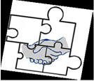

Анонс тренинга
КОНФЛИКТОЛОГИЧЕСКАЯ КОМПЕТЕНТНОСТЬ

Конфликты в Вашей жизни и профессиональной деятельности всегда были, есть и будут. Мы – разные,
поэтому не застрахованы от споров, противоречий, несоответствий в повседневной жизни. К сожалению,
большинство разногласий разрешаются неконструктивным способом. Когда мы не способны в ситуации
конфликта совладать со своими негативными эмоциями, чтобы услышать других, мы пытаемся решить
сложную проблему через угрозы, наказание, бойкоты, манипуляцию, избегание или силовые методы (суд,
штраф, санкция, война). Но есть и другой путь, в основе которого лежит ценность сотрудничества,
восстановления отношений и умение договариваться в любых условиях. Знания и умения, полученные в
ходе обучения по этой программе, позволит человеку самому эффективно разрешать конфликты и споры,
договариваться в различных жизненных и сложных ситуациях, находить решения, удовлетворяющие всех
участников конфликта, понимать интересы другого человека. Развитие конфликтологической
компетентности избавит человека от стресса, сомнений, негативных эмоций, связанных с конфликтными
ситуациями и спорами.
Мы предлагаем тренинг на тему: «КОНФЛИКТОЛОГИЧЕСКАЯ КОМПЕТЕНТНОСТЬ КАК
ИНСТРУМЕНТ ПОВЫШЕНИЯ
ЛИЧНОСТНОЙ ЭФФЕКТИВНОСТИ В ПРОФЕССИОНАЛЬНОЙ ДЕЯТЕЛЬНОСТИ»
Цель тренинга - развитие умений конструктивного поведения в
конфликтных и спорных
ситуациях, формирование способности к взаимопониманию и разрешению конфликтов.
Программа адресована всем, кто хочет приобрести навыки и умения нового
поведения в конфликте на
основе медиативного подхода, повышения личностной эффективности в профессиональной деятельности.
Программа тренинга:
- Анатомия конфликта (анализ структуры конфликта).
- Динамика и лестница конфликта (поведение людей на разных стадиях конфликта).
- Айсберг конфликта (видимые и скрытые причины конфликтных ситуаций).
- Техники конструктивного построения диалога при разрешении конфликта в коллективе.
- Управление эмоциями при разрешении конфликтов, рефрейминг негативных эмоций.
- Техники уверенного поведения в конфликте, стратегии поведения в разных типах конфликта.
- Конфликтологический коучинг.
Время проведения: с 9.00 до 17.00, перерыв с 13.00 до 14.00.
Место проведения:
Целевая аудитория: руководители, заместители по идеологии и кадровому обеспечению,
менеджеры
по управлению персоналом, работники кадровых служб, психологи, педагоги, а также другие
специалисты.
Количество участников: 10-12 человек.
Стоимость: 50.00 руб.
Дата проведения:
Учебно-методическое обеспечение: участники получат раздаточные материалы на бумажных
носителях.
Все участники получат сертификаты.
Ведущая тренинга: Оксана Шульга, кандидат психологических наук,
заведующий
кафедрой
возрастной и педагогической психологии УО «ГрГУ им. Я. Купалы», семейный психолог, системный
семейный
психолог; гештальт-консультант, тренер, медиатор, Председатель Гродненского областного общественного
объединения практических психологов, действительный член Общероссийской профессиональной
психотерапевтической лиги (конт. тел. +375296490338, +375298678240).
Заявки направлять по электронной почте